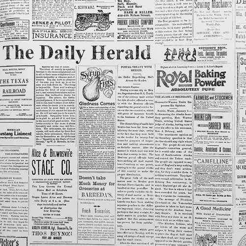
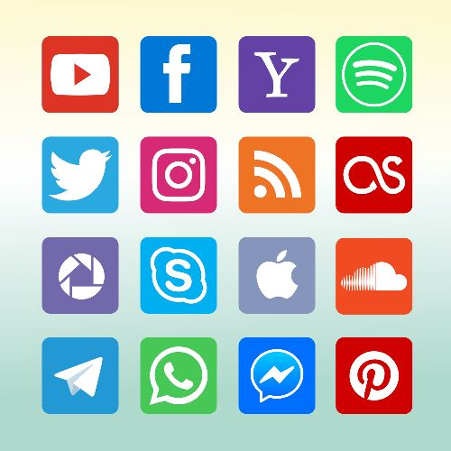
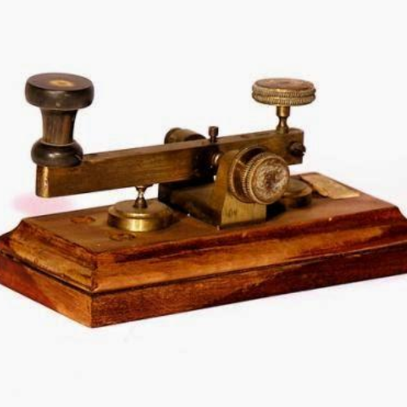
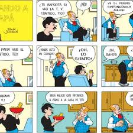
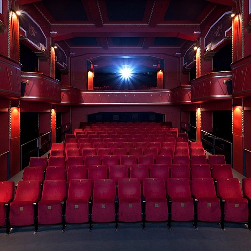

Con el avance de la tecnología, han ido desarrollándose diferentes medios de comunicación, tanto masivos (comunicación social) como personales (comunicación privada entre individuos).
Distintos medios de comunicación
Con el avance de la tecnología, han ido desarrollándose diferentes medios de comunicación, tanto masivos (comunicación social) como personales (comunicación privada entre individuos).
Medios sociales de la información cotidiana
Estos medios engloban diversas tecnologías utilizadas principalmente para transmitir noticias de interés social o noticias relevantes para un número elevado de personas, transmitidas de manera impersonal y generalizada a muchos individuos. Estos medios de comunicación a veces llamados "medios de información sociales" también pueden ser usados para mensajes que no necesariamente sean la transmisión de novedades relacionadas con la actualidad, por lo que pueden ser usados en una forma similar a como es usada la historieta o el cine, que si bien transmiten mensajes socialmente relevantes, no son usados para novedades informativas de la actualidad cotidiana.

Periódicos
Los periódicos son medios de comunicación escrita, que deben su nombre a ser escritas de manera periódica en intervalos de tiempo fijos. Así los diarios, semanarios y anuarios son tipos de publicaciones periódicas de periodicidad diaria, semanal y anual.

Redes sociales
Dentro de la variedad de formas de comunicación basadas en internet, algunas redes sociales virtuales como Twitter, Instagram y Facebook son usadas por un gran número de individuos para mantenerse informados sobre la actualidad cotidiana, e incluso como medio de filtraje y selección de mensajes relevantes.
Medios de comunicación interpersona
Correo postal
Las cartas y el intercambio epistolar en formato de papel fue uno de los primeros medios de comunicación interpersonal a distancia. Durante siglos fue el único medio de comunicación a distancia entre individuos, y con el advenimiento de tecnologías más inmediatas, rápidas y eficientes, el uso de cartas y misivas se ha reducido mucho.

Telégrafo
El telégrafo fue uno de los primeros medios de comunicación a distancia, permitiendo la transmisión de información a través de señales eléctricas. Su desarrollo marcó un hito en la historia de la comunicación, facilitando la conexión entre personas a grandes distancias.
Teléfono
El teléfono fue uno de los medios de comunicación a distancia más importantes, permitiendo la transmisión de voz en tiempo real. Su desarrollo marcó un hito en la historia de la comunicación, facilitando la conexión entre personas a grandes distancias.
Medios de entretenimiento
Los medios de entretenimiento son aquellos que proporcionan diversión y ocio a los usuarios, permitiendo el consumo de contenido audiovisual, literario y otros formatos que satisfacen las necesidades de entretenimiento.

Historieta
La historieta, convertida en medio de comunicación de masas, gracias a la evolución de la prensa decimonónica, vivió su época dorada en cuanto a número de lectores tras la Segunda Guerra Mundial. Con la proliferación de nuevas formas de ocio en la segunda mitad del siglo XX, va dejando de ser un medio masivo en la mayoría de los países, creándose formatos más caros, tales como álbumes o revistas de lujo, y buscando nuevos tipos de lectores..

Cine
El cine (abreviatura de cinematógrafo o cinematografía) es la técnica de proyectar fotogramas de forma rápida y sucesiva para crear la impresión de movimiento mostrando algún vídeo (o película, o film, o filme). La palabra «cine» designa también las salas o teatros en los cuales se proyectan las películas. El cine fue desarrollado por los Hermanos Lumière a partir de 1892.
Internet y sitios web
Internet es un método de interconexión de redes de computadoras implementado en un conjunto de protocolos llamados TCP/IP y garantiza que redes físicas heterogéneas funcionen como una red (lógica) única. Hace su aparición por primera vez en 1969, cuando ARPANET establece su primera conexión entre tres universidades en California y una en Utah. Ha tenido la mayor expansión en relación con su corta edad comparada por la extensión de este medio.